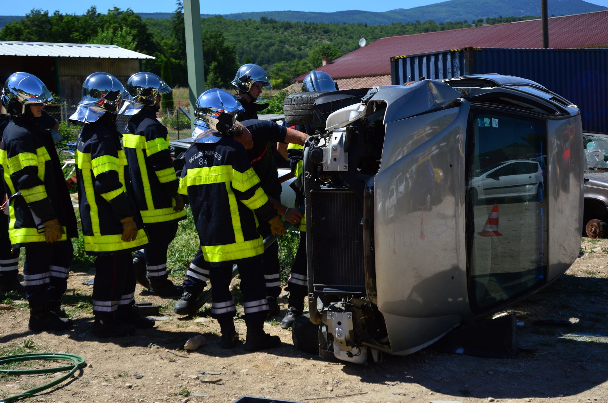

A scene of total devastation
The immediate aftermath of the accident left onlookers in a state of shock as they witnessed the scale of the destruction. The most striking visual element was the presence of overturned carriages, which lay scattered across the debris field. These vehicles, once symbols of transport, were now mangled heaps of metal and wood, illustrating the sheer force of the impact that occurred.
Dust and debris hung heavy in the air, obscuring the view for several minutes after the initial event. As the haze cleared, the true extent of the damage became apparent to the first responders who arrived on the scene. The wreckage was spread across a wide area, making it difficult to determine the exact sequence of events that led to the catastrophic collision.
Emergency medical response efforts
With the primary infrastructure damaged, emergency services had to act with incredible speed to save lives. Because the standard medical facilities were too far or inaccessible due to the wreckage, responders had to improvise. This led to the rapid deployment of makeshift medical tents directly at the site of the crash.
These temporary medical stations became the frontline of survival. Within these tents, paramedics and doctors worked under intense pressure to stabilize victims. The makeshift nature of the setup did not diminish the professionalism of the medical staff, who utilized every available resource to manage the influx of casualties.
Eyewitness accounts of the impact
People who were in the vicinity during the accident have provided harrowing accounts of what they heard and saw. Many described a sudden, deafening roar followed by a silence that was even more unsettling. The transition from a normal day to a scene of absolute carnage happened in a matter of seconds.
It was like the world just stopped for a moment, and then everything was spinning and loud. You could see the smoke rising from the overturned carriages before you even realized what had happened.
These testimonies highlight the unpredictable nature of such accidents. Many witnesses were unable to help immediately due to the physical barriers created by the wreckage, but their observations have been crucial for the ongoing investigation into the cause of the crash.
Investigation into the cause
Authorities have now moved into the investigation phase to determine why the accident occurred. Investigators are currently examining the mechanical state of the carriages and the environmental conditions at the time of the crash. Every piece of debris is being cataloged to reconstruct the final moments before the impact.
The presence of overturned vehicles suggests a high-velocity impact or a significant loss of control. Experts are looking into whether external factors, such as road conditions or mechanical failure, played a primary role. The complexity of the scene means that this investigation will likely take several weeks to complete thoroughly.
Global security and local safety
While this specific event is a localized tragedy, it serves as a reminder of how quickly stability can be disrupted. In an era where news travels fast, these events often intersect with broader discussions about public safety and national security. Understanding the intersection of local accidents and wider systemic risks is vital for modern awareness.
For instance, while we focus on local infrastructure safety, the world is also monitoring complex geopolitical tensions. For those following international developments, you might find interest in our previous report on the Two Charged in Alleged Iran Plot at RAF Fairford, which highlights how security concerns can manifest in unexpected ways. Staying informed on both local emergencies and global security trends is essential for a well-rounded perspective on current events.
See Also
If you enjoyed this Current Events article, check out Two Charged in Alleged Iran Plot at RAF Fairford for more useful reading.